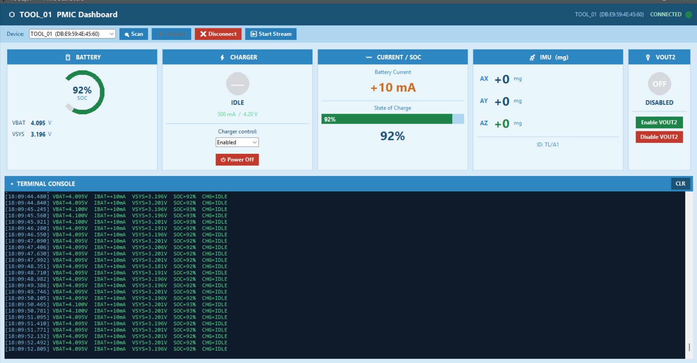

TOOL PCB V1.3


Overview
TOOL PCB V1.3 is a compact, battery-powered handheld board built around a Nordic nRF52832 BLE SoC. A Nordic nPM1304 PMIC handles Li-ion charging, system power and fuel-gauging; a LIS2DTW12 provides 3-axis motion plus temperature, and an A1392 linear Hall sensor reads a magnet-based trigger / position input. A CP2102N USB-to-UART bridge gives a wired console over the USB-C port. Firmware streams live power and sensor telemetry over BLE to a purpose-built Windows test dashboard used for bring-up and battery/charge validation.
Key components
| Part | Function | Role on the board |
|---|---|---|
| nRF52832 Nordic Semiconductor |
BLE 5 SoC — Arm Cortex-M4F @ 64 MHz, 512 KB Flash / 64 KB RAM, 2.4 GHz radio | Main controller — BLE peripheral, sensor acquisition, PMIC host, on-board PCB antenna
(Ant1) |
| NPM1304-QEAA-R7 Nordic nPM1304 |
Power-management IC — Li-ion battery charger, regulated system supply, load switch, integrated fuel gauge | USB-C 5 V input → battery charge (4.20 V CV, configurable current) → VSYS to the
SoC; switchable VOUT2 auxiliary rail; ship / hold mode for shelf storage |
| LIS2DTW12TR STMicroelectronics |
Ultra-low-power 3-axis accelerometer with embedded temperature sensor | Motion / orientation and board temperature; data-ready & wake-up interrupts to the SoC
(dashboard “IMU (mg)”, ID TL/A1) |
| A1392SEHLT-T Allegro MicroSystems |
Micropower ratiometric linear Hall-effect sensor, analog output | Magnet-based trigger / position sensing on the H+ / H− nodes; output read by the
SoC SAADC, sensor gated by a GPIO enable for micropower duty-cycling |
| CP2102N Silicon Labs |
USB 2.0 full-speed to UART bridge, integrated regulator | Virtual COM port over the USB-C connector for wired console / logging / production test |
Interfaces & connectivity
| Function | Device | SoC interface |
|---|---|---|
| Wireless link | nRF52832 radio + PCB antenna | Bluetooth Low Energy — custom GATT service (telemetry stream + control) |
| Power / charge / fuel gauge | nPM1304 PMIC | I²C (host / control) + interrupt line for charge / fault events |
| Motion + temperature | LIS2DTW12 | I²C (SDA1 / SCL1) + INT (data-ready / wake) |
| Magnetic field | A1392 linear Hall | SAADC analog input (H+ / H−) + GPIO enable |
| Wired console | CP2102N → USB-C | UART (TX / RX) |
| Programming / debug | nRF52832 SWD | SWDIO / SWCLK pads (J2 area) |
| Low-power clock | 32.768 kHz crystal (Abracon ABS07) | LFXO — BLE low-power timing / RTC |
Power architecture
- Input: USB-C 5 V feeds the nPM1304 charger input; the same port carries USB data to the CP2102N.
- Battery: single-cell Li-ion / Li-po, charged by the PMIC at 4.20 V CV with configurable
current; battery thermistor on
TS1for JEITA-safe charging. - System rail: PMIC regulates
VSYSto the nRF52832 and sensors; the fuel gauge reports state-of-charge, VBAT, VSYS and battery current back to firmware. - VOUT2: a firmware / dashboard-controlled switchable auxiliary output for powering a downstream load only when needed.
- Storage: PMIC ship / hold mode brings quiescent current to near-zero for shelf life; wake on USB insertion or button.
- Indication:
CHARGE,ERRORandHOST1status LEDs.
Firmware
- BLE peripheral exposing a custom GATT service: a notify characteristic streams
VBAT / IBAT / VSYS / SOC / CHGplus accelerometer XYZ; a write characteristic accepts control commands. - PMIC driver over I²C — reads charger state, VBUS / VBAT / VSYS, fuel-gauge SOC and
battery current; sets charge enable, charge current and
VOUT2; issues power-off / ship mode. - Sensor tasks — LIS2DTW12 accel + temperature over I²C on data-ready interrupt; A1392 Hall sampled on the SAADC with the sensor enable duty-cycled for micropower operation.
- Wired path — the same telemetry mirrored over the CP2102N UART for console logging and production test without a BLE host.
Test & validation dashboard
A companion Windows GUI (TOOL_01 PMIC Dashboard) was built alongside the board to exercise and validate it. It scans for the device by BLE address, connects, and streams live data:
- Battery — SOC ring, VBAT and VSYS readouts.
- Charger — state (idle / charging), target current & voltage, enable / disable control, power-off.
- Current / SOC — live battery current and state-of-charge bar.
- IMU — accelerometer X/Y/Z in mg.
- VOUT2 — enable / disable the auxiliary rail.
- Terminal console — timestamped streaming log
(
VBAT=… IBAT=… VSYS=… SOC=… CHG=…) for charge-curve capture and regression checks.

Layout notes
- Curved ergonomic board outline sized to the handheld enclosure; component placement worked around the grip and the trigger-magnet path.
- Integrated PCB antenna on a dedicated tail with a ground / copper keep-out and the RF matching network placed at the feed.
- Solid ground pour under the digital and PMIC sections; switching / charge current kept away from the Hall analog nodes and the SAADC reference.
- Test points broken out for
H+ / H−(Hall),SDA1 / SCL1(I²C),V1 / V2 / V5V5 / GND1andTS1for bring-up and production test.